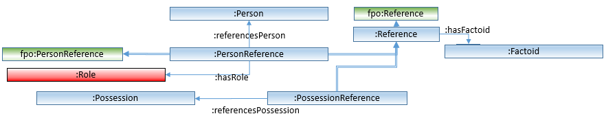
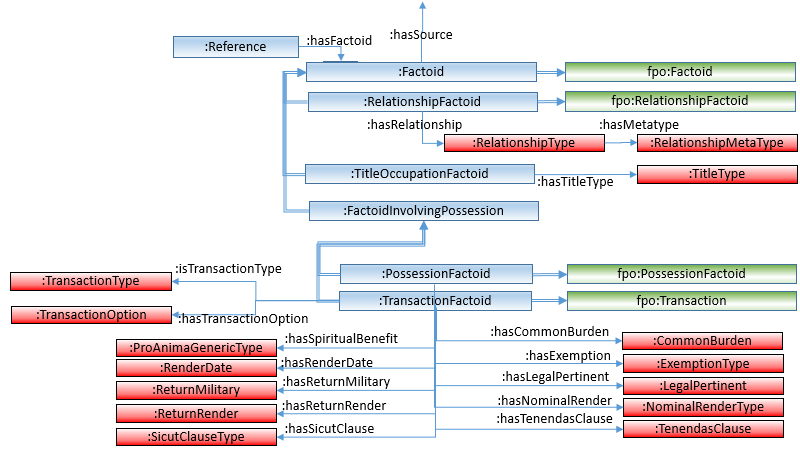
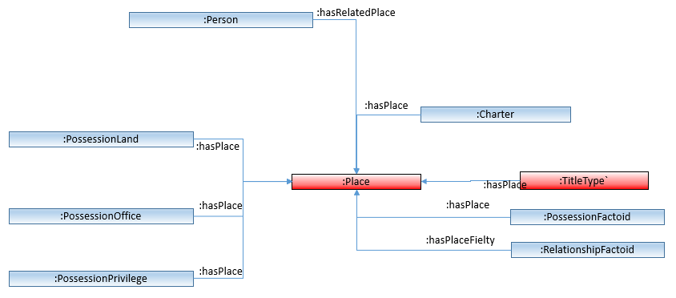

Although one can use the facilities of the rdf4j workbench components of PoMS's RDF server to look at RDF data, and useful work can be done in this way alone, far more can be done through SPARQL queries. However, PoMS's data, like most substantive data RDF is complex, and it takes a while to sort out how to create useful queries. This document provides some examples of simple and more complex SPARQL queries to help you get started with the task of creating your own SPARQL queries.
Unfortunately it would be far too ambitious to create a tutorial here which introduces the fundamentals for the SPARQL query language to those who are unfamiliar with it. Instead, it is assumed that the reader already has the ability to create SPARQL queries. Those who are not familiar with SPARQL might first explore one of the following introductory tutorials before continuing with this document.
One important thing to sort out is what is the PoMS data's structure, since one will need to exploit the structure in order to write useful queries. There are two areas where one can read about the RDF structure:
Finally, Before we begin looking at the SPARQL code a brief explanation about how to interact with this site might be in order.
Often in SPARQL queries one needs to constrain a selection of data according to one of the items in one of PoMS's authority lists. For example, in this sequence of queries we will be looking at charters where women are grantors. To constrain their role in the charter's transaction factoid to Grantor we need to specify this through the URI for the role (vocab:Role) of Grantor.
One can enter the class display and requests information in the dataset related to vocab:Role. Click here to see the result. After all the information related to how vocab:Role is defined in the PoMS ontology, one comes to the list of statements that assert that certain URIs are defined as Roles. One of these, picked here at random, is <http://www.poms.ac.uk/rdf/entity/Role/16>, and if you look at the statements associated with this role you can see one that asserts that its name (vocab:hasName) of "Addressee".
One could open each instance of a vocab:Role URI to find the one for Grantor, but it is better to build a SPARQL query that finds all things that are asserted to be of class vocab:Role, locate for each the triple that has a predicate of vocab:hasName and display the URI for each one, with the name associated with it.
Here is the SPARQL that does this, placed in an HTML form from which you can execute it:
From the resulting display we can see that <http://www.poms.ac.uk/rdf/entity/Role/5> is the Grantor role, and <http://www.poms.ac.uk/rdf/entity/Role/7> is the Beneficiary role.
Later in this sequence of queries we will need to find out which Transaction Type (vocab:TransactionType) represents a Gift. Since. like vocab:Role, vocab:TransactionType is also an authority list, the same query, with vocab:Role replaced by vocab:TransactionType will display the list of all transaction types, and we can establish which one is a type of Gift. You can run this by editing the query in the form above in this way, and running the new query.
In this section we shall develop a query to allow us to see where in PoMS materials there are charters that have women both as grantors and as beneficiaries. We do this by building up gradually more complex queries until we have the one that does the job for us.
Let us begin by using a query that shows us all women that are registered in PoMS. Here it is:
The select clause tells SPARQL to generate a 5 column display, showing in each row of results the values that the
variables aperson, herName, etc. have. To sort out what the variables actually mean requires us to examine how they are selected from the data by the query's somewhat more complex where clause. It asks the SPARQL processor to set all persons that are a vocab:HistoricaFemale, and to set the values of theother variables it is to display with statements associated with this person, and that have predicates as shown: vocab:hasID, vocab:hasPersonDisplayName, etc. Therefore, putting the where clause together with the select clause show us that the 5 columns will be, for each woman, her URI identifier, her display name, her ID number, and the floruit start and end year associated with her. Finally, the optional order by clause asks the prcoessor to sort the results by the woman's name. Note the first line of the query is a prefix element which links the predicate "vocab:" to the URI for the PoMS ontology. Thus, all items referred to with the vocab: prefix are items defined there.
The query above selects all women in the PoMS data, but does not filter this selection to show only those who were grantors in one or more of the legal charters. How do we exploit the structure of the data to filter what is chosen in this way? PoMS is a factoid prosopography, and so uses the concepts associated with factoids to organise its materials. Reading the description of the PoMS ontology here, we find that the vocab:Reference provides the information we need. As it says in the ontology description of the vocab:PersonReference, the vocab:Role is referenced through a property there:
there is a property :hasRole for :PersonReference that asserts the particular role for this person in this factoid, by pointing at one of the roles in the authority list :Role.
You can see the portion of the PoMS ontology's class relationship diagram, particularly the portion about references:

... and can see there the property of the vocab:PersonReference kind of vocab:Reference called "vocab:hasRole" which associates a particular role to each person reference.
Having now seen better how the roles are managed in the structure of PoMS, we are ready to consider the next query, which uses the vocab:Role in a vocab:PersonReference and restricts it to the role of grantor (you might recall that the first query example, above, has shown us that the Grantor role has URI <http://www.poms.ac.uk/rdf/entity/Role/5>:
The select clause here asks the processor to display only three variables, and, after we have examined the select clause we can see that these are the woman grantor's name, her URI, and the URI of the factoid (presumably in a vocab:TransactionFactoid) that has her acting as grantor. The first two lines of the where clause makes sure that only women are selected, and for each one selects her display name which will be used for display purposes in the result. The next three lines selects the references that are connected to the woman, selects only those that have a role of Grantor, and selects the URI of the factoid which has this reference in it.
The resulting display shows most women in more than one row. This is because they are acting as grantor in more than one transaction factoid. If we had wanted a simple list of women who acted as grantors -- one row for each -- we get this by changing the query: removing ?factoid from the select cause, and adding the word "distinct" after select, like this:
select distinct ?grantor ?grantorURI
You can try this by changing the select clause in this way, and running the resultant query again.
What kind of transactions had women as grantors? The transaction factoid is a rich and complex one, with much information potentially attached to each transaction in the PoMS data. One can see much of this complexity by looking at the factoid part of the relationship diagram:

Here you can see the vocab:TransactionType authority list, where each individual transaction type as defined by the PoMS team is assigned an instance. As the figure shows, the property vocab:isTransactionType links the transaction factoid to a particular type.
The next query includes, for each factoid, the kind of transaction assigned to it:
The last three lines of the where clause have been added to gather the transaction type information, and the resulting selected material has been added to the select statement. The third last line of the select clause asserts that the factoids selected by the
part of the query above this has to be a vocab:TransactionFactoid. Each transaction factoid will have a transaction type associated with it, and the URI for each factoid type is specified through the transaction factoid's vocab:isTransactionType property. The last line of this query takes advantage of the fact that vocab:TransactionType instances, which property vocab:isTransactionType points to, are authority lists, and so have a name provided through the vocab:hasName property.
A look at the resultant display shows that the great majority of transactions involving women as grantors are identified as gifts by PoMS, but with a range of other types including sales, quitclaims, etc. Change the order by clause to order by ?typename to group the types together.
We will focus here on gift transactions. In the following query we add further parts to the where clause to find out who are the beneficiaries. This is done by adding parts that select a vocab:PersonReference os type "Beneficiary" (Role 7), and then establishing the name of the person. Here is the relevant fragment:
?breference vocab:hasFactoid ?factoid;
vocab:hasRole <http://www.poms.ac.uk/rdf/entity/Role/7>;
vocab:referencesPerson ?beneURI.
?beneURI vocab:hasPersonDisplayName ?beneficiary.
... and here is the full query:
We are getting close to aim is finding transactions where women are both grantors and beneficiaries. We must simply add a restriction to the query above so that the beneficiary (referenced in the query by variable ?beneURI) can only be a women. Here is the query that does this:
The 2nd last line of the where clause does this by asserting that ?beneURI must be a vocab:HistorialFemale.
When the query is run you will notice that the PoMS team have decided to include the Blessed Virgin Mary as a women, and some characters evidently make reference to her as the beneficiary! This is, of course, understandable, but is perhaps not what we might want for our explorations here. In the next step, we will explicitly exclude her from our considerations.
We'd like to exclude the Blessed Virgin Mary as one of the beneficiaries for our query. The display generated by the previous query shows that the BVM has the URI <http://www.poms.ac.uk/rdf/entity/Person/710>. We do this by explicitly excluding this URI as a beneficiary by using a SPARQL filter mechanism called "MINUS":
You can see the MINUS filter near the end of the query. Here, it tells the SPARQL processor to exclude any ?breference (URI for women beneficiaries) which has the property vocab:referencesPerson pointing to the URL for the BVM.
A further expansion of the query allows us to retrieve information about where in Scotland the properties involved in these transactions between women are. To do this we make use of the fact that Transaction Factoids are connected through vocab:PossessionReference to one or more Possessions (vocab:Possession) which for possessions which are land are connected to places (vocab:Place). You can see vocab:Place in PoMS's relationship diagram. Here is a part of it that focuses on Place:

... and here is the query that fetches the relevant place data via the vocab:PossessionLand
The instances of vocab:Place have three properties that contain geographic data. The data takes the form of a geographic point that represent the location of the place in Scotland. In fact, of course, all places are more properly represented as geographic areas rather than points, but establishing boundaries for all the places would have been both much more time consuming, and in some cases more problematic, than providing a single point.
The three properties are:
vocab:hasGeographicLatitude: A numeric value (double floating point) that represents the geographic latitute of the point associated with the place. e.g. 5.56E1vocab:hasGeographicLongitude: A numeric value (double floating point) that represents the geographic longitude of the point associated with the place. e.g. -3.055E0vocab:hasGeoData: the longitude and latitude of the point, given in wktLiteral notation. e.g.
"POINT(-3.055 55.6)"^^geo:wktLiteralThe Latitude and Longitude valued properties can be used to provide values to systems that can make use of these values. For example, the demonstration application mapapp, available from this server here, is a small Python script that takes latitude and longitude values from the results of a SPARQL query and projects them onto an interactive map of Scotland. Indeed, a minor change to the query shown above that generates places associated with property exchanges between women is the one used in the demo application to provide the data for the map:
One can see the html page that this python script generates here.
The following query collects data about the few charters that PoMS researchers have from the medieval period that are written in Gaelic. The language used in each charter is associated with it associated vocab:Source instance. By building a query which then locates the factoids associated with these Gaelic charters, and then locating from them the properties and places involve one can see where geographically the properties were that were referenced in these Gaelic language charters:
This query is structured so that it would replace the query in mapapp, and thus this script could then be run to produce a map showing where these properties are located. Once this query is established to be working, one can add a bit more to the process to select additional data about the factoid, source and property that will then enrich the popup text that the map will display.
RDF4J's SPARQL processor incorporates large parts of the GeoSPARQL specification which allows queries to be created that make use of geographic concepts such as geographic containment and distance. (About GeoSPARQL in rdf4j see pages at GitHub and rdfj4 itself).
It is outside the scope of this document to present the GeoSPARQL features in detail. However, a few SPARQL queries that make use of them will hopefully be helpful.
GeoSPARQL can make best use of vocab:Place's vocab:hasGeoData property, which provides the point coordinate data in the format that GeoSPARQL functions understand: wktLiteral notation. This simplest of GeoSPARQL-powered queries uses the function geof:distance to calculate the distance in kilometers between the two places specified explicitly in the query:
The following query produces a list, ordered by distance, of places in PoMS that are close to what is now the modern Scottish city of Dundee (co-ordinates: lat 56.462, long -2.9707). Note the use of geof:buffer which creates a circular shape centered on Dundee's coordinates of 15 kilometers in size. This is given as the area for geof:sfWithin to use to check whether each place with a value for vocab:hasGeoData is inside it or not.
A minor extension to the query above allows one to use any place with a point coordinate in PoMS as the centre for the "near to" query. <http://www.poms.ac.uk/rdf/entity/Place/2459> is Glasgow Cathedral.
GeoSPARQL operations can be integrated into more general queries. In this example most of the query establishes places that have been granted to Glasgow Cathedral (<http://www.poms.ac.uk/rdf/entity/Person/186>, Place: <http://www.poms.ac.uk/rdf/entity/Place/2459>), but uses GeoSPARQL's geof:distance function to establish distance in kilometers for each of the land possessions granted from the cathedral itself.
The places are ordered by distance so that one can readily see what places have been granted to the cathedral that are some distance off.